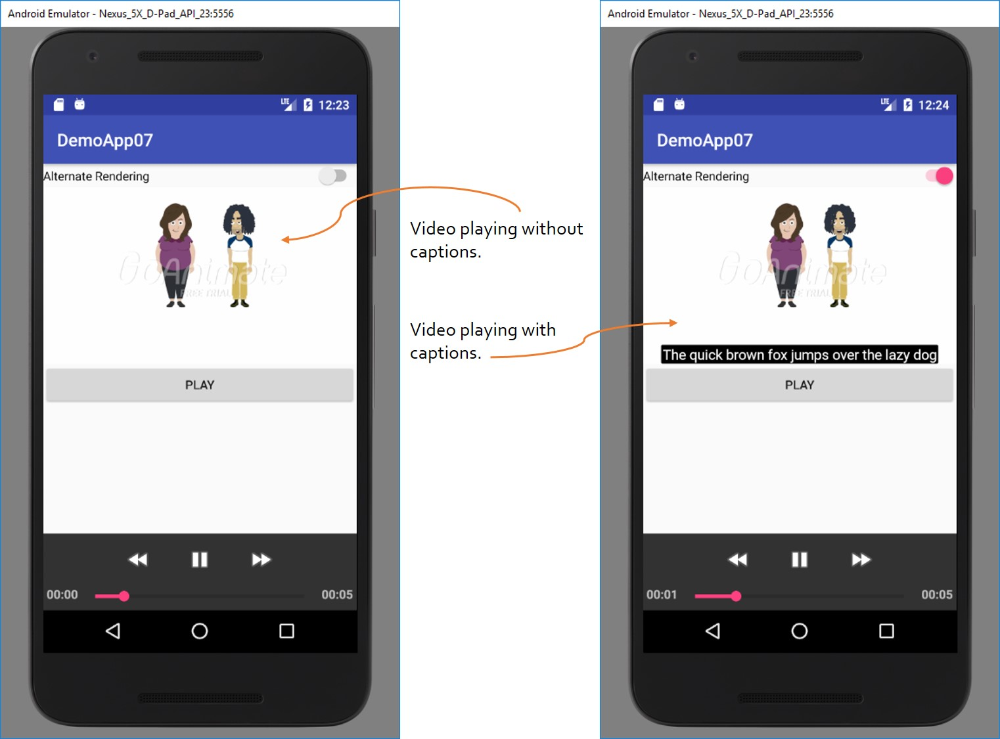

Video Captions
Introduction
Individuals who are deaf or hard-of-hearing (DHH) are disadvantaged when watching videos as they depend on either captions, transcripts or sing language interpretations of what they are watching. Without such a mechanism, DHH individuals will not be able to understand the content nor the purpose of the video that they are watching.
One of the accessibility features provided by the Android operating system is the ability to render captions for videos. Among other settings, users have the ability to set the default font size and colors of the captions. However, Android does not automatically generate the caption text, this text needs to be provided by the content author and associated with the video player.
This activity involves associating a pre-created captions file with a pre-created video file. In the
non-accessibility version of the app, the video is played without captions. In the accessible version of the
app, the captions file is associated with the video, and the video is played with the volume muted.
A pre-requisite for this activity is to turn on Androids caption accessibility feature.

Activity
Download the activity here.
The non-accessible version of this app is located here.
The accessible version of this app is located here.
More Resources
1. Android captions feature2. VideoView API